Two coding agents, one weekend, four versions. Codex did the long build on Saturday; Claude Code did the corrections on Sunday. Everything is scripts, so every version can be rebuilt and compared.
Inventory the three AECOM views and the site plan, register the site to OpenStreetMap, block out a grey massing model with cameras fitted to each artwork.
Solve the three camera fits (2.9 px error on the north aerial), trace bowl, canopy and field from pixels, build the district: river, bridges, rail links, Roosevelt Road.
Thirty-five Python generators: arched brick envelope, clock tower, four tiers with 27,000 seats, video boards, riverwalk, park, Northwestern Medicine, Willis and 13 more landmarks. Eight native renders and a written handoff of known problems.
Fix what a fan would notice: a scoreboard on the grass, a bowl end floating over the river, no lake, the wrong towers in right field. Every fix checked with same-camera before/after renders.
Railyards sessions only (Playi work on the same machine that weekend is excluded), as recorded locally by Tokscale from the Codex and Claude Code session logs. Cost is an API-equivalent estimate at list prices, not what a subscription charged.
| Model | Responses | Input | Output | Cache read | Cache write | Model time | Est. cost |
|---|---|---|---|---|---|---|---|
| GPT-6 AstraCodex · V1, V2, V3 lead: calibration, bowl, district, handoff | 922 | 2.18 M | 248 K | 112.3 M | 0 | 6.1 h | $77.01 |
| GPT-5.6 LunaCodex · six parallel V3 build workers overnight | 1,218 | 4.77 M | 369 K | 143.6 M | 0 | 4.7 h | $4.60 |
| Claude Fable 5.1Claude Code · V4: scoreboard, structure, lake, skyline, this site | 77 | 19 K | 161 K | 27.0 M | 0.49 M | 0.7 h | $21.17 |
| Total | 2,217 | 6.97 M | 778 K | 282.9 M | 0.49 M | 11.5 h | $102.78 |
"Model time" is the summed duration of model responses; Luna's six workers ran in parallel, so it exceeds their wall clock. Codex logs did not record cache writes. The Fable numbers are the V4 session through the building of this site.
The model is fitted to three published AECOM images and the site plan. A 90-foot base path is the scale prior. Three perspective cameras were solved against pixel controls; everything traced from a picture records which image and which pixels it came from.
Geography is real: OpenStreetMap footprints for 780 existing buildings plus 238 in the near South Loop, the USGS shoreline for the lake, published heights for the landmarks. Buildings are never moved to look better from a seat; the cameras go to the buildings.
About forty Python modules run through the Blender command line generate the scene: bowl, envelope, seats, boards, park, bridges, skyline, lake. Live edits in Blender were pushed back into the generators, so a clean rebuild reproduces the file. A rebuild takes about a minute; the render pass about ten.
build_blockout.py → build_detail.py → finalize_scene.py, then run_v4_renders.shAstra (Codex) ran Saturday: source inventories, camera calibration, the bowl and the district, thirty-five generators, six Luna workers building components in parallel overnight, and a written handoff that listed what it believed was still wrong. That handoff was honest; it flagged the scoreboard and the missing lake itself.
Fable 5.1 (Claude Code) took the handoff on Sunday. It rendered diagnostic cameras before touching anything, triangulated the board from all three source views instead of guessing, found that the skyline data and the city data disagreed by 33 m and fixed the registration once, fetched the lake from USGS when the city's GIS server timed out, and ranked candidate towers by how many pixels they would occupy from the seats. A reviewer model checked the plan before the build and the result before sign-off.
Every V4 fix has a before/after from the same camera, an orthographic plan with clearances in metres, and the model's own geometry projected back into the AECOM photos. The V3 baseline is preserved and hash-checked. A ledger records what is resolved, what is uncertain and what was deliberately left.
Same cameras, same lighting, same pipeline. Left: the V3 model rebuilt through the V4 chain. Right: V4.
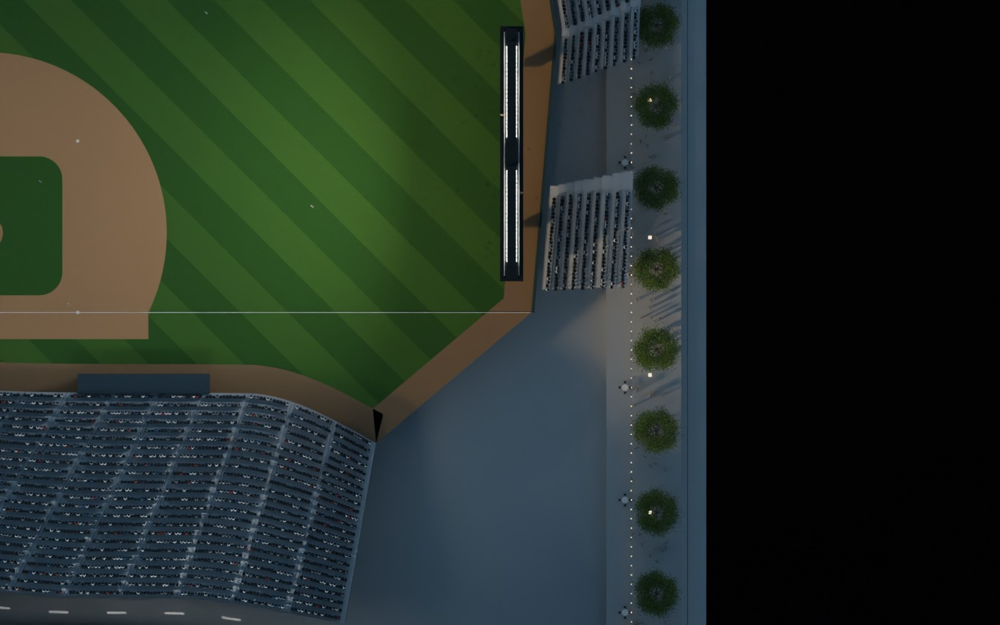
Before. The V3 anchor came from a single-height back-projection and landed inside the playable polygon." loading="lazy">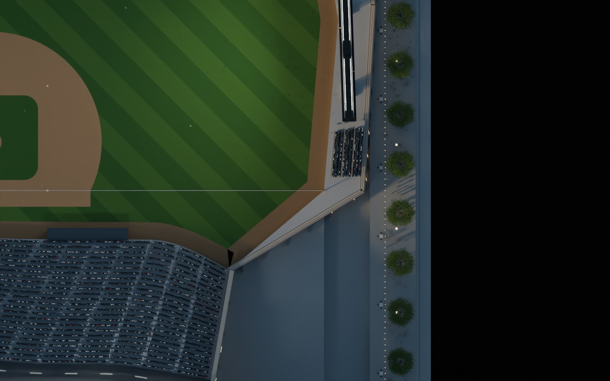
After. Triangulated from all three source cameras; on pylons behind the wall, every footprint clears the field (min 0.39 m)." loading="lazy">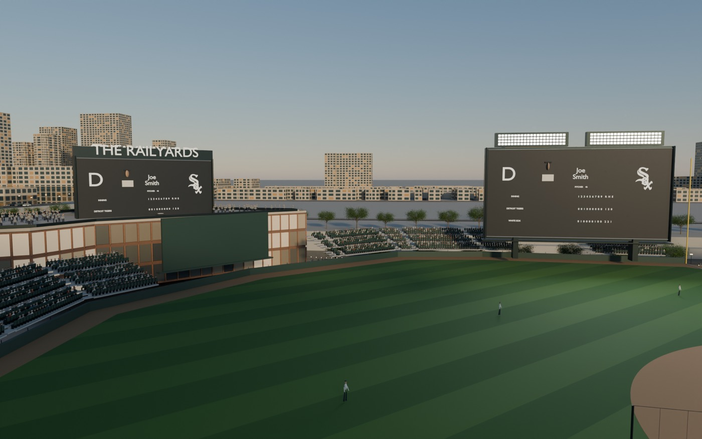
Before. From third base the board reads as standing on the grass; the right-field towers are missing." loading="lazy">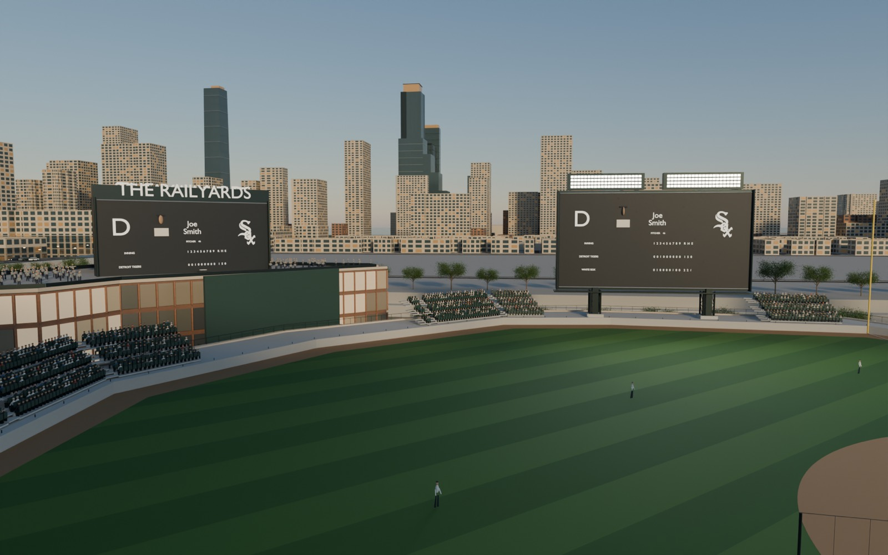
After. Board set back; NEMA, One Museum Park, The Grant and 1000M in right-centre." loading="lazy">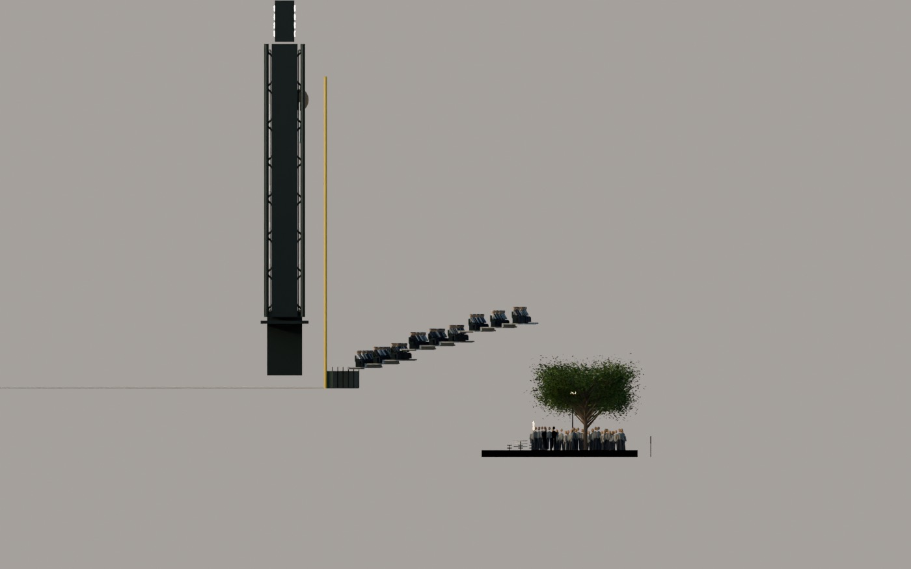
Before. Section through the right-field corner: field, bleachers and board over an 8 m void down to the riverwalk." loading="lazy">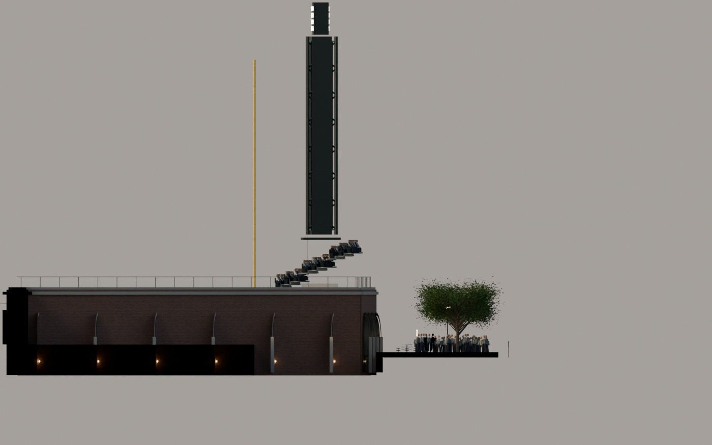
After. A podium from the riverwalk to the bleacher base, a brick arcade on the river face, pylons landing on the podium." loading="lazy">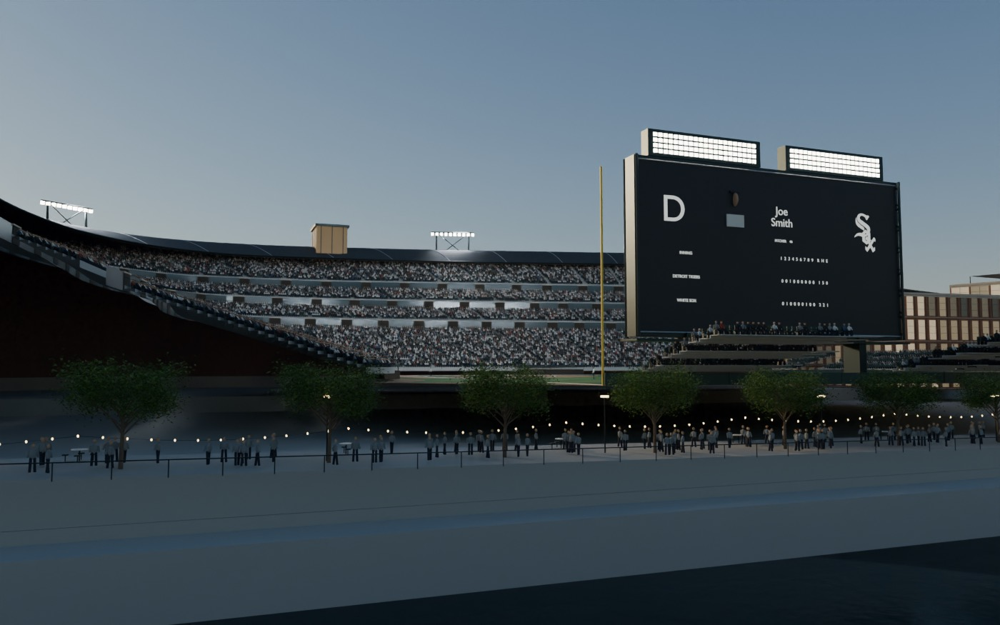
Before. From the east bank the decks end in mid-air beside the tower." loading="lazy">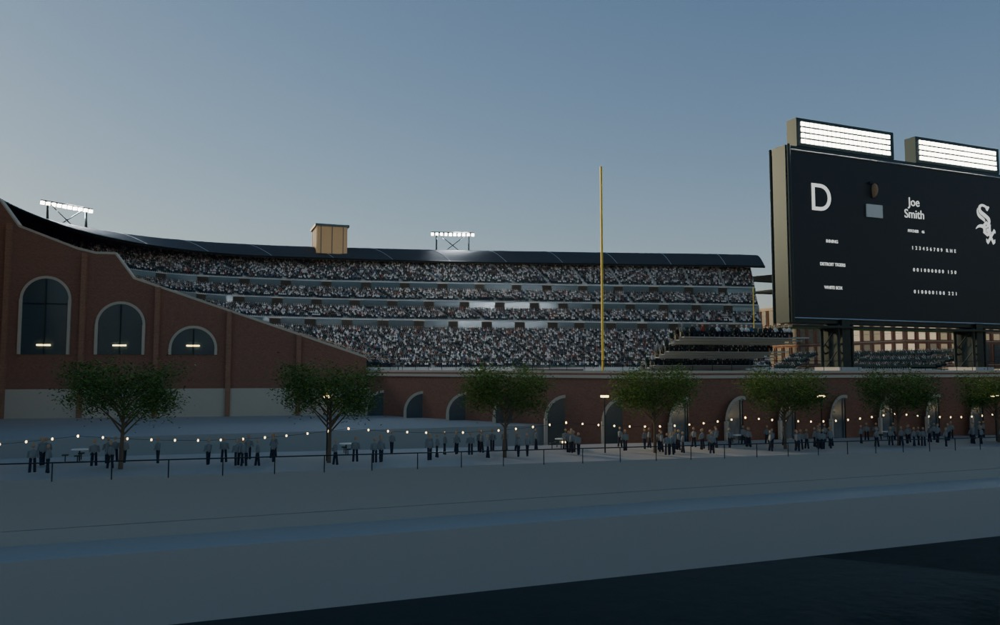
After. A brick end wall following the four tiers, an arcade at the riverwalk, a link block to the tower." loading="lazy">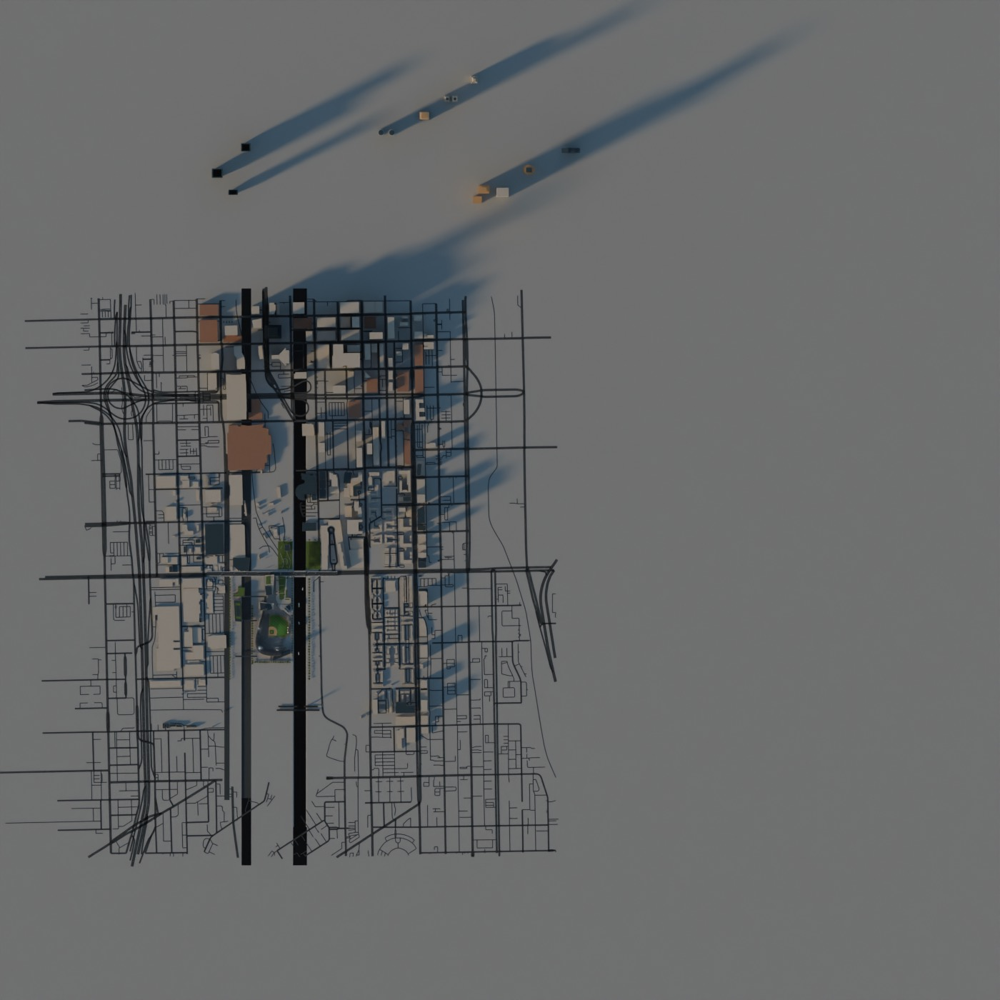
Before. The background terrain paved straight across the lake." loading="lazy">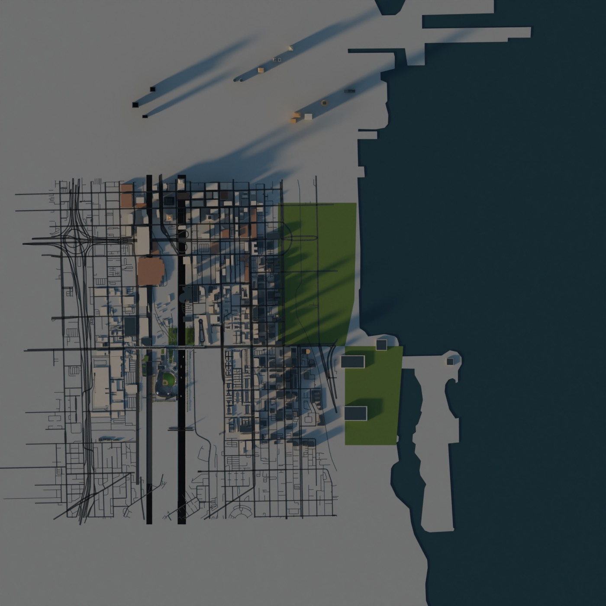
After. USGS shoreline in the scene’s frame: Grant Park, Museum Campus, Northerly Island, Burnham Harbor, Navy Pier." loading="lazy">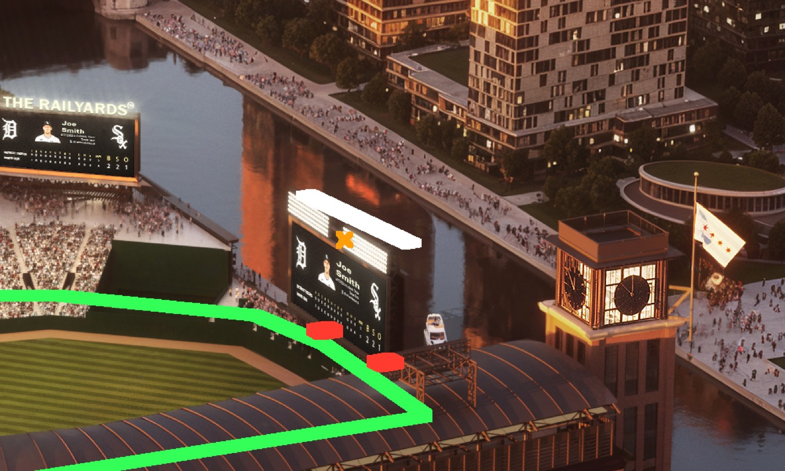
Proof against the artwork. The modelled field (green), board frame (black/white) and pylon bases (red) projected into the AECOM south aerial with the calibrated camera. Orange: where V3 had the board." loading="lazy">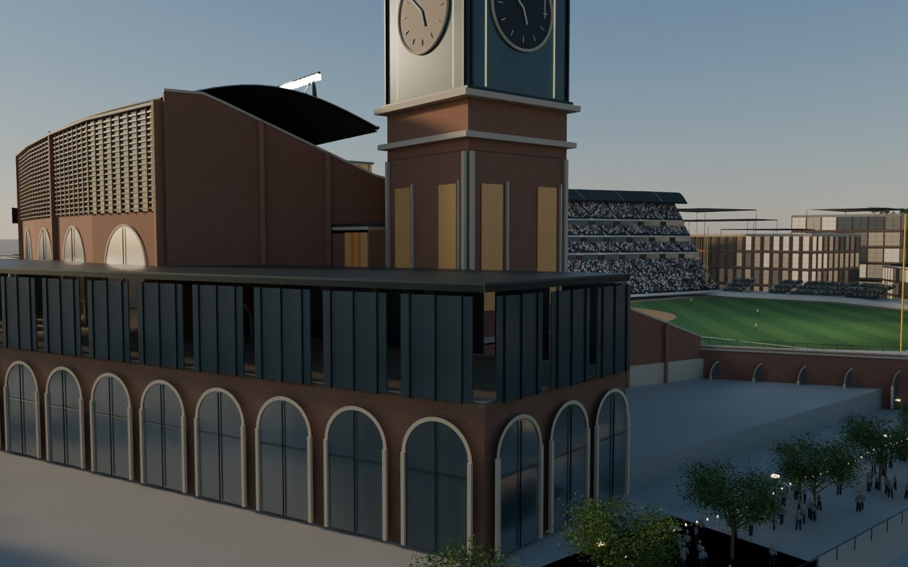
Tower junction. Clock tower, river arcade and bowl end now meet, matching the crop of the south aerial." loading="lazy">